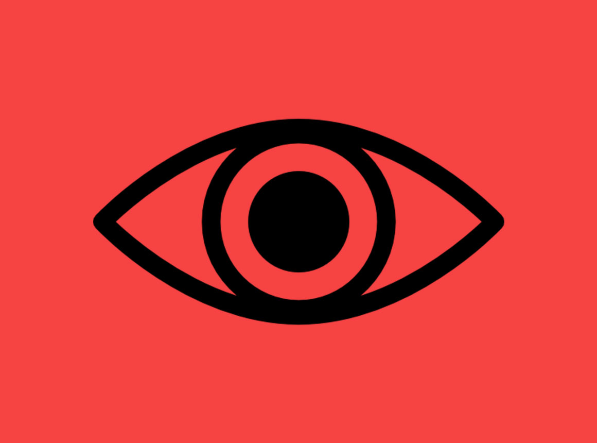
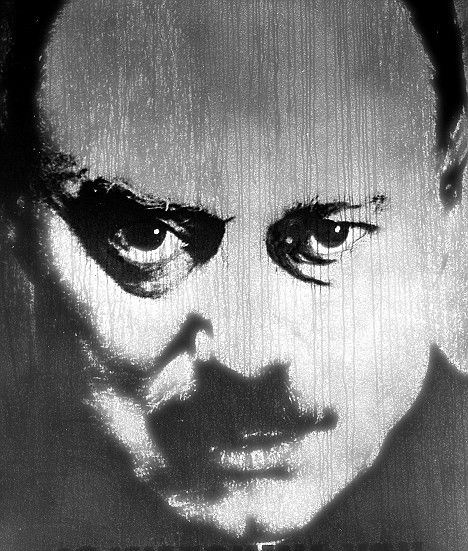

"El Gran Hermano te vigila..."
Su existencia es motivo de especulación y debate a lo largo de la historia. El Gran Hermano es el líder supremo del Partido en Oceanía, la entidad gobernante que representa el control totalitario, la vigilancia constante y la manipulación psicológica en la sociedad distopica de la novela. El Gran Hermano personifica el control totalitario, la manipulación de la verdad y el miedo constante que acecha en esta pesadilla distópica, donde la individualidad y la privacidad son sacrificadas en el altar del poder absoluto. Su influencia siniestra es un recordatorio inquietante de los peligros de un Estado que busca el control total sobre la mente y el espíritu humanos.
El rostro del Gran Hermano
En la historia, la existencia real del Gran Hermano es incierta, el mismo protagonista de nuestra historia duda de si el Gran Hermano es una persona real o simplemente una construcción propagandística utilizada por el Partido para mantener el control sobre la población. A pesar de las dudas sobre su existencia, su imagen esta en todas partes: en pósteres, en las pantallas de televisoras, en las calles y en los hogares de las personas, logrando asi ser una figura que mantiene a la población bajo un control absoluto, su imagen y su lema “el Gran Hermano te vigila” son herramientas de adoctrinamiento que fomentan la lealtad al Partido y la obediencia a su ideología. Su influencia psicologica es abrumadora y mantiene a la población en un estado constante de sumisión.
Dado a este gran poder que tenía, justamente, el Gran Hermano, lograba llevar así a cabo una población completamente devota a él y a sus elecciones, y esto conlleva también sus leyes, aquí te presento algunas...
- Crimen del Pensamiento (Thoughtcrime): El delito más grave en Oceanía es el Crimen del Pensamiento, que implica tener pensamientos o sentimientos contrarios al Partido o al Gran Hermano. Incluso el más mínimo indicio de pensamiento independiente puede llevar a la detención y a la tortura en el Ministerio del Amor.
- Doblepensar (Doublethink): El Doblepensar implica la habilidad de mantener dos creencias contradictorias al mismo tiempo y aceptar ambas como verdaderas. Aunque no es un delito en sí mismo, es una herramienta que el Partido utiliza para mantener el control ideológico y manipular la realidad.
- Crimentalidad (Ownlife): La búsqueda de una vida privada o individualista, conocida como Crimentalidad u "Ownlife," es vista como un delito. El Partido busca eliminar cualquier forma de individualismo y promover la lealtad absoluta al Gran Hermano.